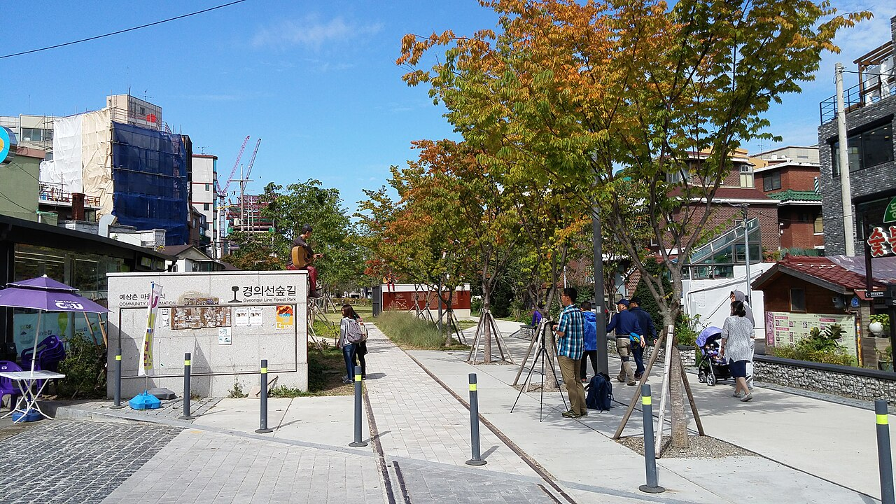
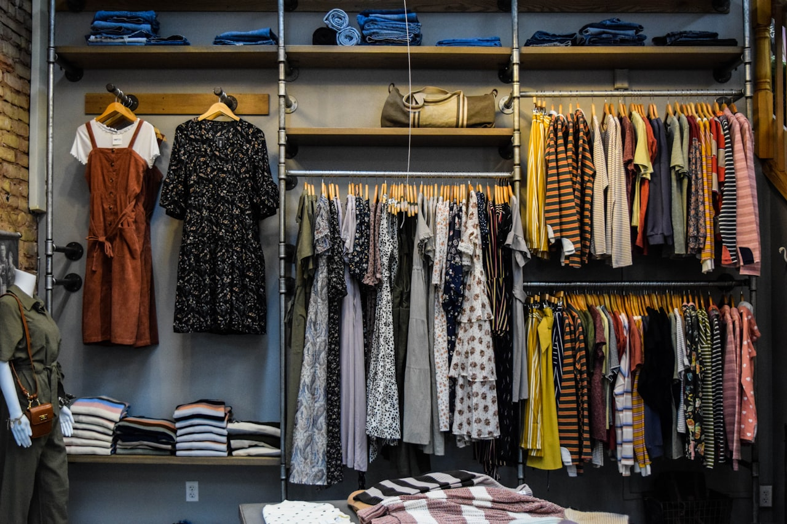
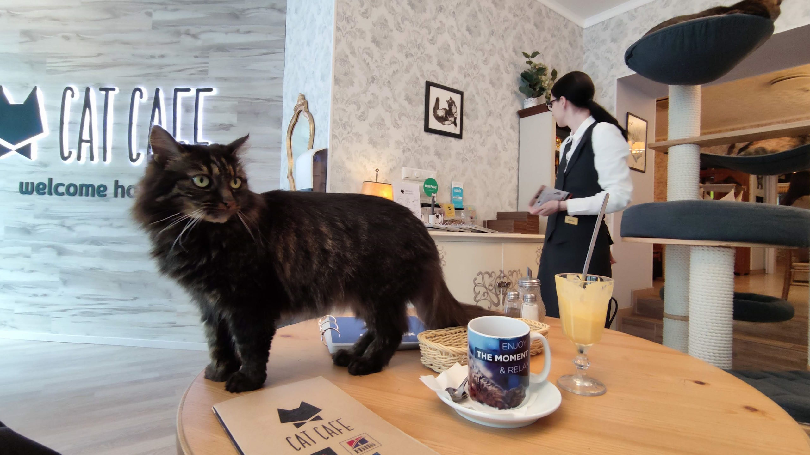
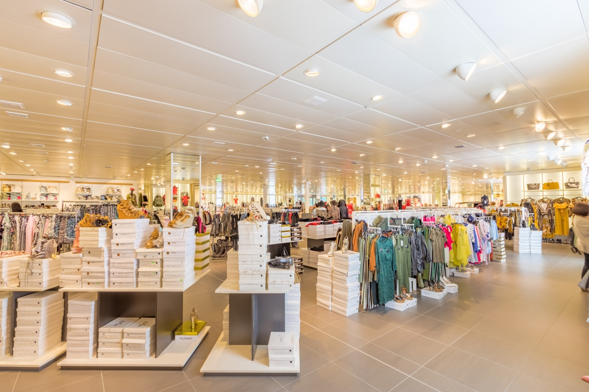
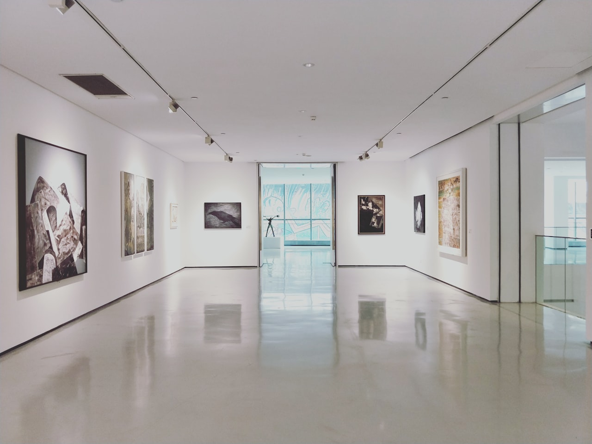
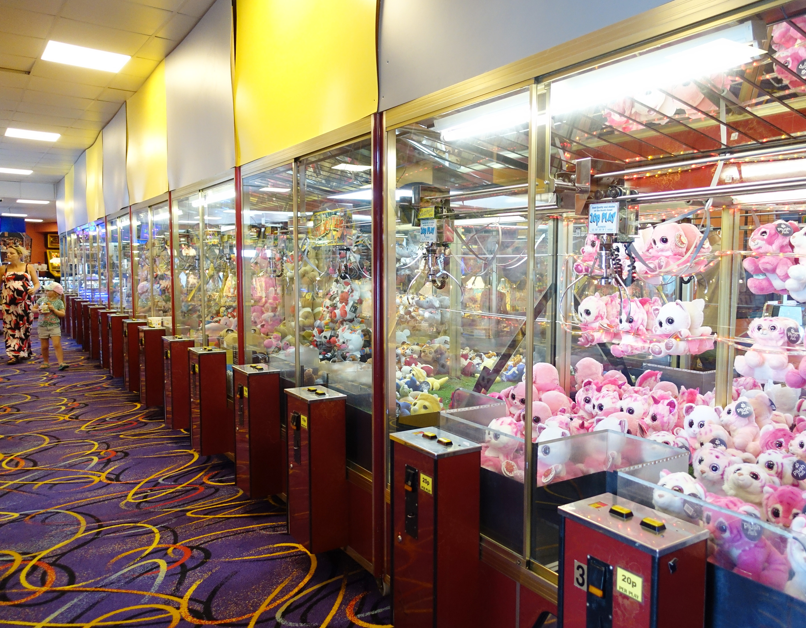
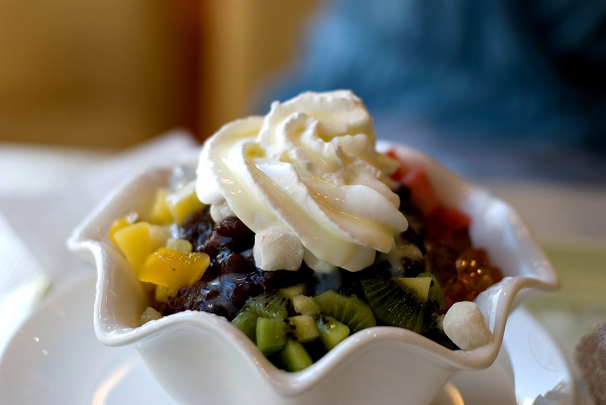
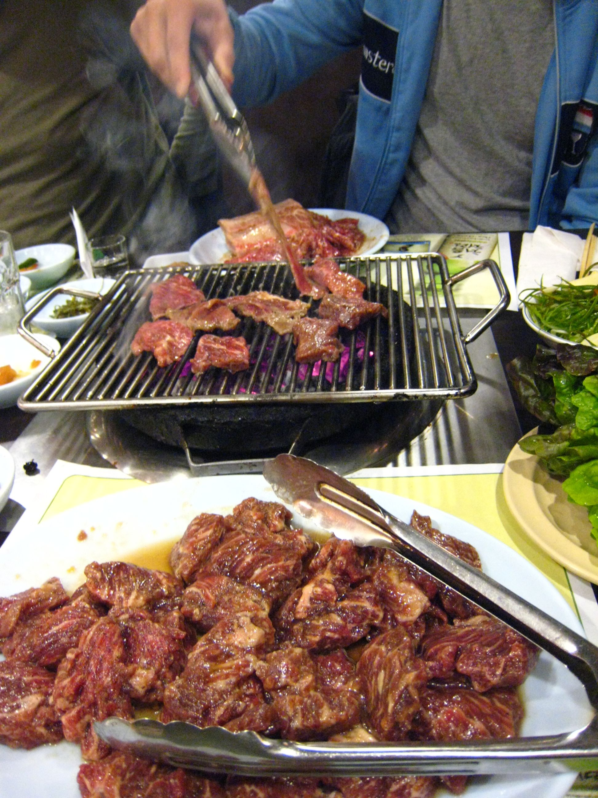

Seoul · Day 1 · 弘大 + 延南洞
D123 JUN 二
弘大 + 延南洞
京義線林蔭道一日線
京義線林蔭道一日線
沿京義線林蔭道由北面延南洞一路行落南面弘大核心嘅一條南北直線。23 Jun 前半乾，戶外彈性、唔限上午；正午熱想嘆冷氣就揀室內，黃昏回步行街收尾。全程平路，長者可行。
一條南北直線
由 延南洞早午餐 → 林蔭道 → 弘大潮店 → 步行街表演 → 烤肉，沿廢鐵路綠帶串連 12 站。23 Jun 前半乾，戶外彈性、唔限上午；正午熱可揀室內 A/C，落雨先退沿線室內備案。
延南洞 早午餐 · 林蔭道 · 文青小店 09:00–13:00 · 京義線綠帶
1
早餐
09:00
09:00
必到
河馬早午餐館 히포 브런치하우스
民居改建的寬敞早午餐大店，招牌當季水果法式吐司與每日限量布拉塔凍意粉，熱食、舒適、寵物友善 —— 酒店無早餐時行足一日的能量底。
價 ₩13,000–22,000／人 · HKD 67–114步行 8 分tag 爸爸食物
Rain本身室內大店，落雨照食；客滿轉延南 Blue Bottle 淨飲
「由民居改建、設庭園遮陽座的延南洞早午餐店，主廚出身酒店與星級餐廳，招牌是新鮮當季水果法式吐司，寵物與小朋友皆可同行。」— @brunchhaus_hippo · Instagram
2
10:00
必到
延南中央公園 · 京義線林蔭道 경의선숲길 연남동
廢鐵路改建的長條林蔭公園，延南段約 1.3 公里最美，因似紐約中央公園而有「延特爾公園」之稱，樹蔭隧道是招牌構圖，亦是貫穿全日的主軸線。
價 免費步行 4 分tag 全家
Rain部分有樹蔭；大雨轉入兩側延南咖啡店或小店室內串連

「由廢棄鐵路改建的綠帶公園，兩側布滿咖啡館、甜點店與小餐廳，假日有時還有跳蚤市場或街頭藝人表演。」— 小螺絲看世界 · 小螺絲看世界
3
11:00
必到
延南洞設計小店帶 페넥 메이드바이 연남
公園兩側一串獨立選店：FENNEC 簡約真皮皮件、made by 設計師文創文具，加上 ELLE 2026 延南女裝小店 Visual Aid（女裝買手・可試身免稅）／Common Unique（簡約韓系女裝）／Juuneedu（韓劇風套裝睡衣）／Modooring（平價銀飾頭箍）。每間重點見下面購物全清單。
價 文創 ₩1,500–10,000 · 銀包 ₩49,000 起步行 3 分tag 媽媽手工藝
Rain各店本身室內，串連只需數分鐘，本身即散步段雨天替代

「FENNEC 用的是高級真皮、價格合理不貴；連同 made by、TETEUM 一帶，由手機殼到電腦袋的韓系文創都能一次逛齊。」— Creatrip 延南洞購物總整理 · Creatrip
4
13:00
必到
青春貓咖啡 청춘고양이카페
弘大區人氣貓咖啡，環境乾淨、無時限，照顧多隻被領養的貓，入場附一杯飲品 —— 延南行落弘大途中的休息與互動點。（平日 13:00 才開，安排 13:00 到啱開門；之前可慢遊延南）
價 入場 ₩10,000（預約 ₩9,000）· HKD 52／47步行 7 分tag 爸爸貓
Rain本身室內，落雨照常；正午高溫亦是冷氣避難點

「弘大商圈貓咖啡廳，可以享受整日被貓咪包圍的療癒感受，貓性情溫順、附一杯飲品，適合一家大細坐低慢慢摸貓。」— Kate's neverland · Kate's neverland
弘大核心 潮店 · 午餐 · 文藝 · 平價時裝 · 夾娃娃 13:30–17:00 · 梅雨正午退室內
5
13:30
必到
Musinsa Standard 弘大 무신사 스탠다드 홍대
韓國國民基本款，2025 年底翻新約 600 坪旗艦店（B1 男裝／1F 主打／2F 女裝，設 Live Fitting Room），剪裁好、性價比高、可退稅。隔鄰仲有 COVERNAT（잔다리로・潮牌）、Stand Oil 手袋旗艦（2026-03 新）、I Am Joy（女裝＋飾物）、4 層 무신사 홍대 —— 詳見下面購物全清單。
價 上衣 ₩19,000 起／外套 ₩59,000 起 · HKD 98／306步行 8 分tag 仔男裝
Rain落雨可由潮店帶直接轉入 AK Plaza 一棟搞掂
「Musinsa Standard 是韓國國民基本款主力，剪裁與性價比皆好，是挑回港著得出男裝的穩陣站。」— Funliday 2026 首爾逛街地圖 · Funliday
6
午餐
14:00
14:00
必到
AK Plaza 弘大店 AK플라자 홍대점
直駁車站的全室內冷氣商場，集女裝、生活雜貨、卡通角色店與美食廣場，亦有 K-pop 與動漫周邊 —— 正午高溫驟雨的主庇護所兼午餐點。
價 服飾 ₩20,000–60,000／午餐約 ₩10,000 · HKD 104–311／52步行 5 分tag 媽媽女裝
Rain此處本身就是全日的雨天主備案

「AK Plaza 弘大店一次可以買到不少東西，是應有盡有的小型百貨公司。」— Funliday 2026 首爾逛街地圖 · Funliday
7
14:30
可選
KT&G 想像庭院 弘大 KT&G 상상마당 홍대
多層文藝複合空間，含當代藝術展廊、一樓設計選物店與地下 Live Hall，外牆建築本身好拍 —— 梅雨大雨時兼具文化體驗的最佳室內備案。
價 展覽 免費或 ₩3,000 · 免費／HKD 16步行 6 分tag 媽媽手工藝
Rain本身為大雨王牌室內點；可看當日免費展或地下場次

「弘大文藝複合空間，支援非主流藝術家，含展覽、電影、設計與演出，一樓設計廣場可逛可買設計品。」— KT&G 想像庭院官方 · KT&G 想像庭院官方
8
15:00
可選
M PLAYGROUND × 弘大女人街帶 엠플레이그라운드 · 홍대 여자거리
M PLAYGROUND 藍色貨櫃平價韓系衣櫃：男女中性寬鬆版、襪牆配件超平、約三成自家設計、有退稅機；隔鄰弘大女人街一排質感小店（Lune 等）主打成熟簡約女裝，現金可微殺。
價 上衣 ₩9,000–25,000／襪配件 ₩1,000 起 · HKD 46–128步行 4 分tag 媽媽女裝＋仔男裝
Rain各店室內，落雨照逛；M PLAYGROUND 연중무휴 10:10–24:00（女人街各店到場 Naver 核）
「M PLAYGROUND 是弘大女人街入口的平價貨櫃屋，男女分層款多、約三成自家設計、超便宜還有退稅機；弘大女人街則是韓妞私藏、比主街更有質感的成熟簡約女裝街。」— Minako 弘大攻略
9
15:30
必到
弘大夾娃娃機街 홍대 인형뽑기 거리
弘大核心密集的無人夾娃娃店群，獎品由迷你款到大型娃娃、UFO 機都有，可一條街連跳幾間比較難度，全室內避雨。
價 ₩1,000–2,000／次（多支援拍卡）· HKD 5–10步行 4 分tag 仔夾娃娃
Rain全室內店群，落雨照玩

「弘大核心一帶無人夾娃娃店與小店密集，街頭表演與遊樂店連成一片，是感受弘大青年氣氛的散策路線。」— Funliday 2026 首爾逛街地圖 · Funliday
10
咖啡
16:30
16:30
可選
雪冰 弘大入口站店 설빙 홍대입구역점
黃豆粉年糕刨冰，凍、甜、不辣，二樓冷氣強 —— 梅雨濕熱的消暑避難所。
價 刨冰 ₩7,000–12,000 · HKD 36–62步行 6 分tag 全家
Rain本身室內，落雨無問題

「雪冰在視覺、味覺上都讓人感到歡喜，來韓國一定要吃；招牌黃豆粉年糕刨冰細緻如雪，弘大入口站 9 號出口即到。」— 萍萍的美食記錄網（痞客邦） · 萍萍的美食記錄網
想散步的街步行街 街頭表演 · 烤肉 finale 18:00–21:00 · 黃昏收尾
11
晚間
18:00
18:00
必到
弘大想散步的街步行街（街頭表演）홍대 걷고싶은거리
弘大青年文化核心步行街，傍晚有音樂、跳舞、魔術等街頭表演，平路站一陣即走 —— 當晚晚餐前後的主活動。
價 免費（打賞隨意）步行 5 分tag 全家
Rain落雨或安全理由即停演 → 退入 AK Plaza、想像庭院 Live Hall 或街邊咖啡店

「沿主要動線走向弘大 9 號出口，傍晚之後氛圍更明顯，這裡是街頭藝人最集中的地方，從舞團、歌手到樂器演奏都有。」— 跟著漫琳去旅行 · 跟著漫琳去旅行
12
晚餐
19:30
19:30
必到
肉夢 弘大本店（炭火烤肉）육몽 홍대본점
弘大三大烤肉之一，同供牛、豬與烤腸，主肉約 360 小時濕式熟成、只灑鹽不醃，辣度只在可選蘸醬與小菜，有店員代烤，啱遊客與長輩。
價 拼盤 ₩69,900／人均 ₩20,000–23,000 · HKD 362／104–119步行 7 分tag 爸爸食物
Rain全室內。梅雨夜晚一定先 Naver／CatchTable 訂位免排隊

「肉夢被喻為弘大必吃三大烤肉店之一，店內是為數不多同時提供牛肉、豬肉和烤腸的烤肉店。」— 仙婆婆的腳毛遊記（痞客邦） · 仙婆婆的腳毛遊記
購物指南 弘大 + 延南洞 · 11 個購物點 商場 / 街 / 旗艦店 · 品牌+站出口+時間
逐個購物點一張卡（更詳細）：延南文創女裝、E-Square／AK Plaza／Daiso／Olive Young 商場、弘대主街／女人街平價衣、潮牌街（含 Stand Oil 2026 手袋）、Musinsa、ÅLAND —— 連品牌一覽、站出口、營業時間，👪 標家庭重點。
⭐ 必逛購物
媽媽：Visual Aid（延南女裝買手）、I Am Joy（女裝＋滿牆耳環）、Stand Oil（2026 手袋）、Olive Young（韓妝）
仔：Musinsa（基本款＋買手）、M PLAYGROUND（平價男女裝）、COVERNAT（潮牌棒球帽）、SPAO（卡通睡衣）
全家：Daiso（雜貨手信）、Butter（Sanrio／Chiikawa 雜貨）、KAKAO FRIENDS（角色打卡）、AK 一樓美食街（午餐）
🔸 獨特：KAKAO Ryan Café（角色主題 café）、AK 5F 動漫店（Animate／One Piece）
仔：Musinsa（基本款＋買手）、M PLAYGROUND（平價男女裝）、COVERNAT（潮牌棒球帽）、SPAO（卡通睡衣）
全家：Daiso（雜貨手信）、Butter（Sanrio／Chiikawa 雜貨）、KAKAO FRIENDS（角色打卡）、AK 一樓美食街（午餐）
🔸 獨特：KAKAO Ryan Café（角色主題 café）、AK 5F 動漫店（Animate／One Piece）
新村 加碼 文青 café／店（可選 · 홍대隔籬一站）時間有餘先加
+
可選
可選
독수리다방 老鷹茶房 독수리다방
新村老牌文青茶房，8 樓俯瞰延世路，招牌維也納咖啡，舊時學運與文藝青年地標，坐得舒服又有故事感。
時間 11:00–23:30址 연세로 36tag 全家
Rain整層室內 café，落雨照坐
+
可選
可選
파이홀 PIEHOLE 파이홀 신촌
美式復古手工批甜品 café，現烤鹹甜批配咖啡，店面復古佈置好拍，是新村段的甜品抖腳位。
時間 11:00–22:00址 연세로5나길 20tag 全家
Rain本身室內，落雨無問題
+
可選
可選
블루벨트 BLUE BELT 블루벨트 신촌
新村 vintage 古著店，主打版型好嘅 Levi's 牛仔等美式舊物，店主精選，撿版型佳的二手丹寧。
時間 11:00–23:00址 신촌로 93tag 仔／媽媽
Rain本身室內，落雨照逛
註에이닐／AYNIL 逢週二休，而 D1＝23 Jun 正是週二，故不列；想去留待非週二日。新村三店時間到場 Naver 核「영업 중」。
D1 · 23 Jun 二 2026 · 相+影評版 · 地圖 Naver 到場核 · 1 HKD ≈ 195 ₩ · Generated by Claude Code
弘大 + 延南洞 · 京義線林蔭道一日線 · 影評取自各部落客／官方 IG · 新村加碼三店（독수리다방／PIEHOLE／BLUE BELT·避開週二休嘅 AYNIL）
弘大 + 延南洞 · 京義線林蔭道一日線 · 影評取自各部落客／官方 IG · 新村加碼三店（독수리다방／PIEHOLE／BLUE BELT·避開週二休嘅 AYNIL）